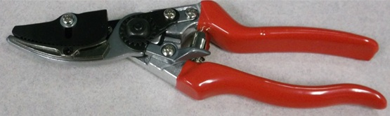

The Flight Device
In the final design concept, a quadcopter was chosen. Functionally, this is because
a quadcopter provides the most balance with the least amount of weight. Economically,
it is also the most affordable, stable structure that Team FETCH can afford.
The Arm
A lattice-work arm extending straight below the quadcopter was decided on. Though it
is slightly heavier than other design possibilities, it is also the least fragile and
easiest to fix. Extending straight down will also give the propellors a wide berth in their
operation, which is a good safety feature for the quadcopter hardware.
The Cutting Attachment
Shears, specifically cut-and-hold pruners, were the chosen solution for collecting branch samples.
This is because they provide a steady, easily controlled cutting motion that saw blades cannot quite
achieve. Cut-and-hold shears also come with an added plastic attachment that provides the operator with
the ability to maintain their grip on the branch samples for easy collection.
